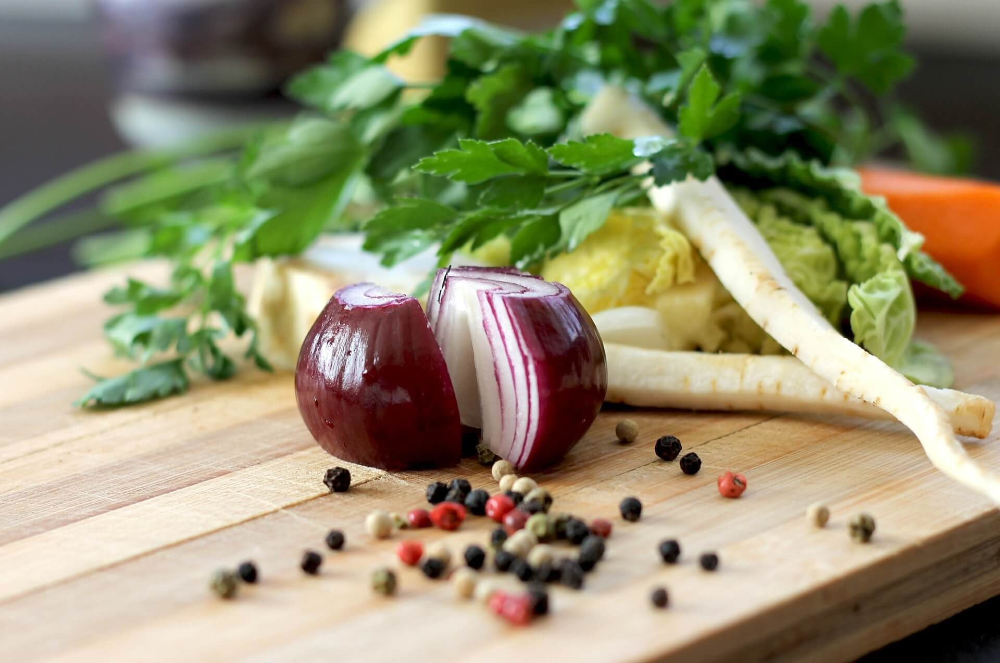
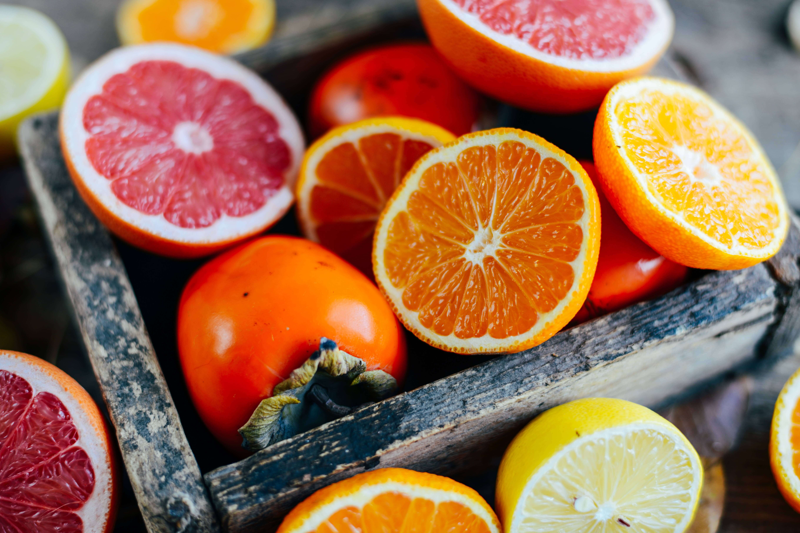
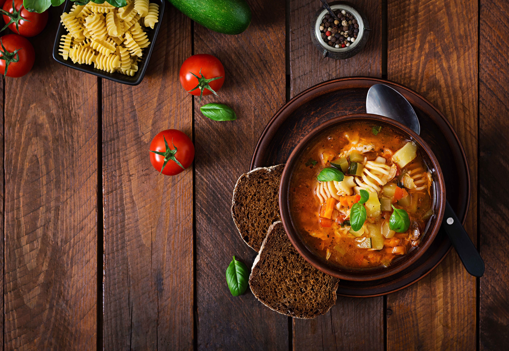
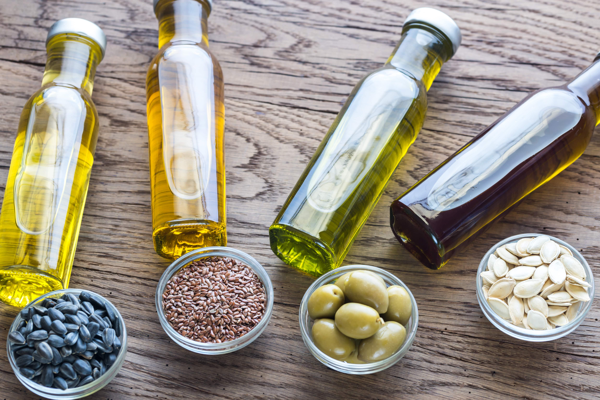

farm pack
the farm
-  vegetable
-  fruits
-  sidedish
-  product
farm pack
the farm
we grow food
Eliminate something superfluous from your life. Break a habit. Do something that makes you feel insecure. The winds and waves are always on the side of the ables.

the staff is friendly and very helpful. i look forvard to doing business with them for "healthy food". verty impressed by all that was in my first box. the staff is friendly and very helpful. i look forvard to doing business with them for "healthy food".
john doethe staff is friendly and very helpful. i look forvard to doing business with them for "healthy food". verty impressed by all that was in my first box. the staff is friendly and very helpful. i look forvard to doing business with them for "healthy food".
annabel croftthe staff is friendly and very helpful. i look forvard to doing business with them for "healthy food". verty impressed by all that was in my first box. the staff is friendly and very helpful. i look forvard to doing business with them for "healthy food".
jammiejune 14, 2017
how to steam & pure your sugar pie pumkin
cut the halves into smaller pieces and place in a large pot of water with a steam baskit to keep the pumkin pieces from touching......
read more
june 1, 2017
great bulk recipes to help use all your orginec vegetables
a fridge full of organic vegetables purchased or harvested with the best of intentions, and then life gets busy, leaving no time to peel,.....
read more
june 5, 2017
how can salmon be raised organically in fish farms?
organic food consumption is rapidly increasing. the heightened interest in the global environment and a willingness to look.....
read more